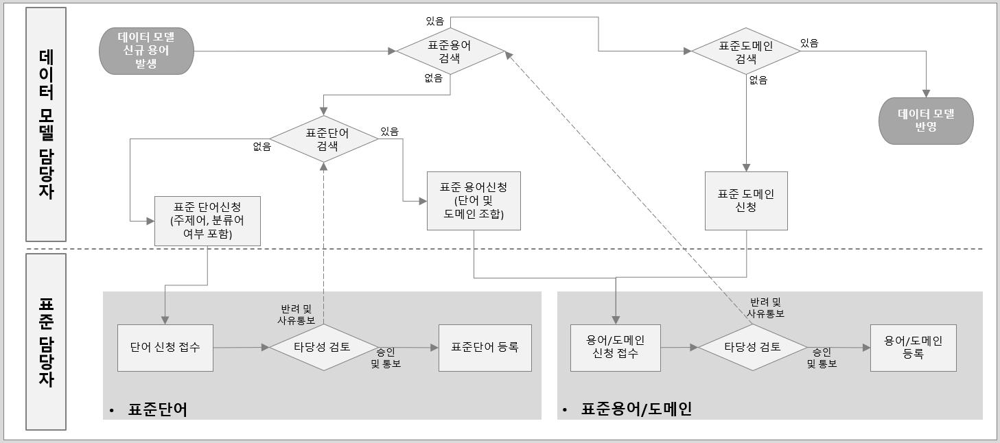

Data Governance Study - Data Registration Process
데이터 표준 관리: 표준 단어, 용어 및 도메인 신청 절차
Data Governance
이 블로그 포스트에서는 데이터 표준 용어 사전의 개념, 목적, 구성 요소 및 제작 과정을 설명한다. 표준 용어의 기본 원칙, 구성 원칙, 활용 원칙을 다룬다.
1 Data Standard Governance > Data Registration Process
1.1 표준 단어, 용어 및 도메인 신청 절차
- 데이터 모델 담당자가 단어(분류어일 경우 도메인 포함) 및 용어와 도메인을 신청하고 표준 담당자가 승인한다.
- 표준담당자가 회사 표준담당자가 아닐 경우 표준단어/표준용어에 등록 시 회사 담당자 확인이 필요함
- 메타시스템 도입 전까지 회사 렌터카 표준 담당자가 엑셀로 관리함

- 신청 단계 (데이터 모델 담당자):
- 새로운 단어, 용어, 도메인의 필요성 확인
- 기존 표준 목록 검토 (중복 여부 확인)
- 신청 양식 작성
- 단어의 경우: 단어명, 정의, 영문명, 약어 등
- 분류어일 경우: 위 내용 + 도메인 정보 (데이터 타입, 길이 등)
- 용어의 경우: 용어명, 정의, 구성 단어, 도메인 등
- 신청 시스템이나 지정된 채널을 통해 제출
- 검토 단계 (표준 담당자):
- 신청 내용의 완전성 확인
- 기존 표준과의 일관성 검토
- 명명 규칙 준수 여부 확인
- 정의의 명확성과 적절성 검토
- 도메인 정보의 적절성 확인 (해당되는 경우)
- 피드백 및 수정 단계:
- 필요시 데이터 모델 담당자에게 추가 정보 요청 또는 수정 제안
- 데이터 모델 담당자는 요청받은 사항에 대해 보완하여 재제출
- 승인 단계 (표준 담당자):
- 최종 검토 후 승인 결정
- 승인된 내용을 표준 사전에 등록
- 필요시 관련 시스템 업데이트 (예: 데이터 모델링 도구, 메타데이터 저장소 등)
- 결과 통보:
- 데이터 모델 담당자에게 승인 결과 통보
- 승인된 경우 적용 방법 및 시기 안내
- 반려된 경우 사유 설명 및 대안 제시
- 적용 및 모니터링:
- 데이터 모델 담당자는 승인된 표준을 모델에 적용
- 표준 담당자는 적용 현황을 모니터링하고 필요시 지원 제공
- 피드백 및 개선:
- 사용 과정에서 발생하는 이슈나 개선사항 수집
- 필요시 표준 개정 절차 진행
1.1.1 소프트웨어 개발 및 관리 프로세스
개발 과정의 유연성과 표준화 사이의 균형을 잡는 것은 중요하다.
- 개발 단계 구분:
- PoC / 프로토타입 단계
- 개발자들에게 최대한의 자유도 부여
- 임시 명명 규칙 사용 (예: tmp_, poc_, dev_ 접두어)
- 표준화 절차 적용하지 않음
- 알파 / 베타 단계
- 느슨한 명명 규칙 적용
- 주요 변수, 속성에 대해서만 표준화 검토
- 간소화된 승인 프로세스 사용
- 프로덕션 준비 단계
- 엄격한 표준화 적용
- 모든 주요 변수, 속성, 코드에 대한 표준화 검토
- 정식 승인 프로세스 적용
- PoC / 프로토타입 단계
- 명명 규칙 계층화
- 개인 / 팀 레벨
- 개발자 또는 팀 내에서 사용하는 임시 명명 규칙
- 문서화는 하되, 공식 승인 불필요
- 프로젝트 레벨
- 프로젝트 내에서 합의된 명명 규칙
- 프로젝트 매니저 또는 기술 리더의 승인
- 부서 / 도메인 레벨
- 특정 비즈니스 도메인이나 부서에서 사용하는 표준
- 도메인 전문가의 검토 필요
- 전사 레벨
- 조직 전체에서 사용되는 공식 표준
- 데이터 거버넌스 위원회의 승인 필요
- 개인 / 팀 레벨
- 자동화 도구 활용
- 코드 분석 도구를 사용하여 명명 규칙 준수 여부 자동 검사
- CI/CD 파이프라인에 표준화 검사 단계 추가
- 데이터 모델링 도구와 연동하여 표준 용어 자동 적용
- 점진적 표준화
- 개발 초기에는 핵심 개념에 대해서만 표준화 적용
- 프로젝트 진행에 따라 점진적으로 표준화 범위 확대
- 리팩토링 과정에서 비표준 명칭을 표준화된 명칭으로 대체
- 예외 관리 프로세스
- 표준을 적용하기 어려운 특수 상황에 대한 예외 처리 절차 마련
- 예외 사유 문서화 및 승인 프로세스 간소화
- 교육 및 가이드라인
- 개발자들에게 표준화의 중요성과 이점에 대한 교육 제공
- 쉽게 참조할 수 있는 명명 규칙 가이드라인 제공
- 자주 사용되는 표준 용어 목록 공유
- 정기적인 리뷰 및 정리
- 주기적으로 사용 중인 변수명, 코드명 등을 검토
- 프로젝트 마일스톤마다 표준화 작업 수행
1.1.2 표준 단어, 용어 및 도메인 신청 절차 TASK 별 상세 설명
| 순번 | TASK | 설명 | 담당 | 비고 |
|---|---|---|---|---|
| 1 | 데이터 모델 신규 용어 발생 | 데이터 모델 담당자가 속성 추가 등으로 신규 용어를 추가요건 발생 | 모델담당 | |
| 2 | 표준 용어 검색 | 데이터 모델 담당자가 추가한 속성에 해당하는 용어를 데이터 사전에서 검색 | 모델담당 | |
| 3 | 표준 도메인 검색 | 신청하는 용어의 도메인이 존재하는지 데이터 사전에서 검색 | 모델담당 | |
| 4 | 표준 단어 검색 | 데이터 모델 담당자는 표준데이터 사전에서 신규 속성 구성 단어를 검색 함 | 모델담당 | |
| 5 | 표준 단어 신청 | 표준데이터 사전에 구성 단어가 없을 경우 DA는 표준담당자에게 단어신청 함 | 모델담당 | |
| 6 | 단어 신청 접수 | 표준담당자는 신규 단어 신청을 접수 함 | 표준담당 | EXCEL |
| 7 | 타당성 검토 | 기존 표준단어 및 지침을 참고로 신규 신청 단어의 표준 등록 가능 여부를 판단하고 결과를 데이터 모델 담당자에 통보 함 | 표준담당 | |
| 8 | 표준 단어 등록 | 신규 신청 단어가 표준 단어로 적정할 경우 표준담당자는 표준 사전에 등록 함 | 표준담당 | |
| 9 | 표준 용어/도메인 신청 | 신규 속성 용어/도메인이 없을 경우 데이터 모델 담당자는 표준담당자에게 용어신청 함 | 모델담당 | |
| 10 | 타당성 검토 | 신청 된 용어/도메인이 표준 지침에 맞게 구성 되었는지 검토 후 표준 등록 여부 DA 통보 | 표준담당 | |
| 11 | 표준 용어/도메인 등록 | 신규 신청 용어/도메인를 표준 사전에 등록 | 표준담당 | EXCEL |
| 12 | 데이터 모델 반영 | 변경 된 표준 용어 및 도메인을 데이터 모델에 반영 | 모델담당 |